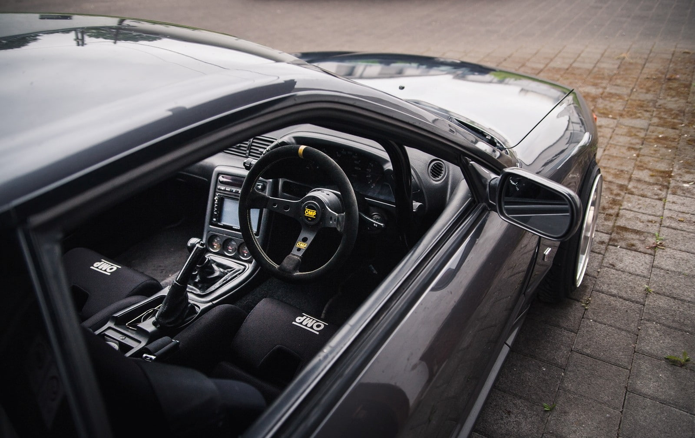
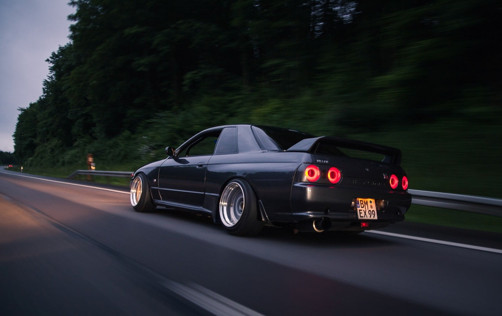
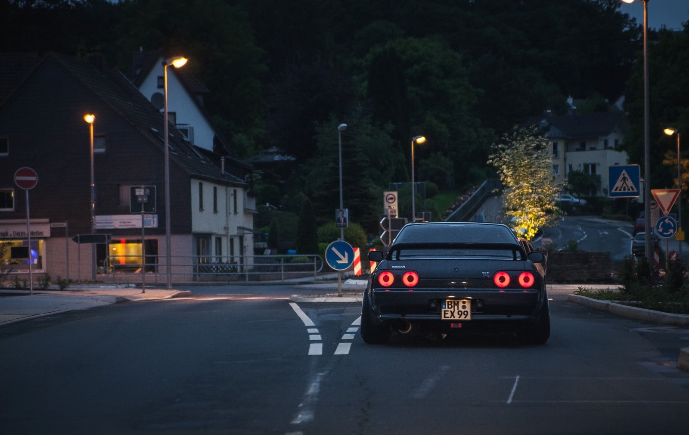
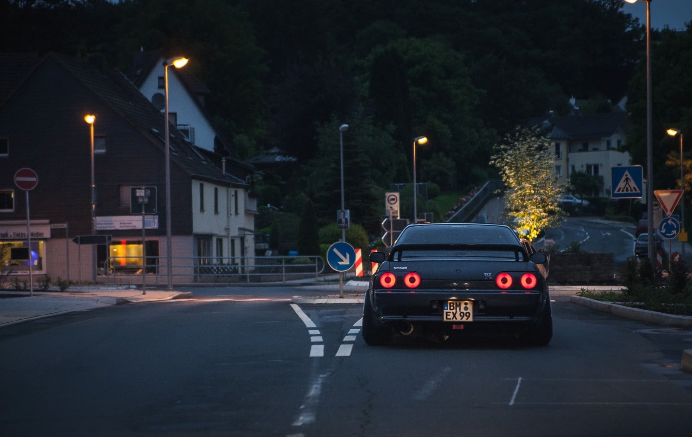
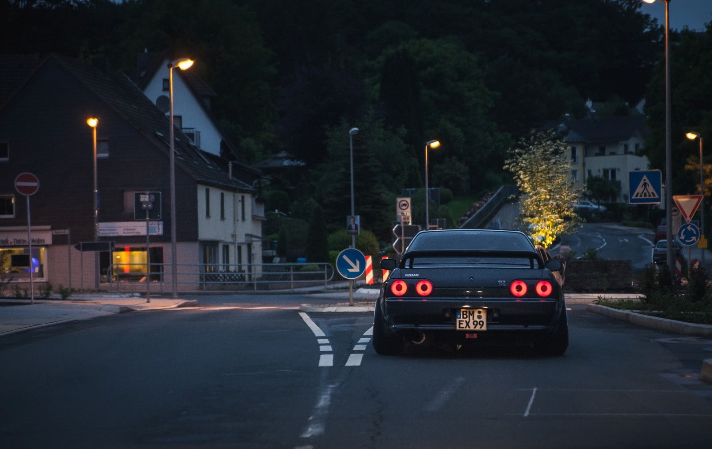
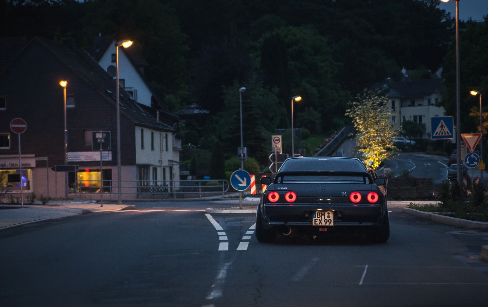

 



The Nissan Skyline GT-R (Japanese: 日産・スカイラインGT-R, Hepburn: Nissan Sukairain GT-R) is a Japanese sports car based on the Nissan Skyline range. The first cars named "Skyline GT-R" were produced between 1969 and 1972 under the model code KPGC10, and were successful in Japanese touring car racing events. This model was followed by a brief production run of second-generation cars, under model code KPGC110, in 1973.
| Engine |
2.6 L twin-turbocharged RB26DETT I6
2.8 L twin-turbocharged RB-X GT2 I6 (400R)
|
|---|---|
| Transmission | 5-speed manual |